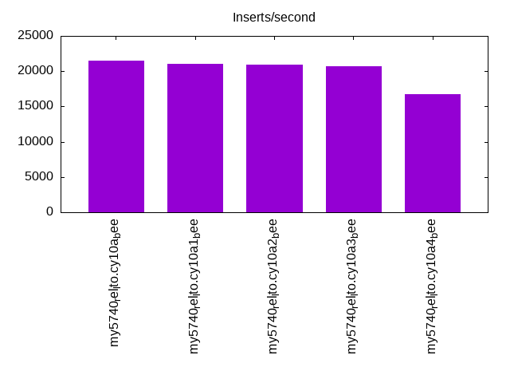
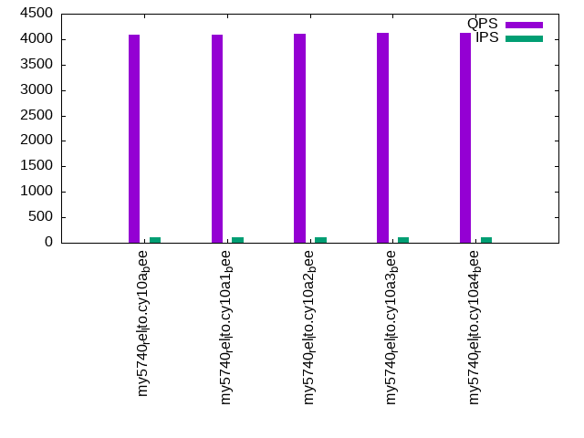
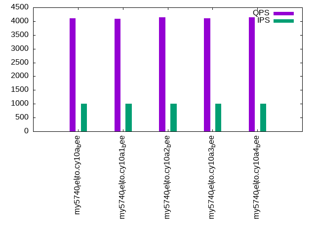

Introduction
This is a report for the insert benchmark with 20M docs and 1 client(s). It is generated by scripts (bash, awk, sed) and Tufte might not be impressed. An overview of the insert benchmark is here and a short update is here. Below, by DBMS, I mean DBMS+version.config. An example is my8020.c10b40 where my means MySQL, 8020 is version 8.0.20 and c10b40 is the name for the configuration file.
The test server has 8 AMD cores, 16G RAM and an NVMe SSD. It is described here as the Beelink. The benchmark was run with 1 client and there were 1 or 3 connections per client (1 for queries or inserts without rate limits, 1+1 for rate limited inserts+deletes). There is 1 table. It loads 20M rows without secondary indexes, creates secondary indexes, then inserts 50M rows with a delete per insert to avoid growing the table. It then does 3 read+write tests for 3600s each that do queries as fast as possible with 100, 500 and then 1000 inserts/second/client concurrent with the queries and 1000 deletes/second to avoid growing the table. The database is (or should be) cached by InnoDB.
The tested DBMS are:
- my5740_rel_lto.cy10a_bee - InnoDB and MySQL 5.7.40, rel_lto build, cy10a_bee config, compiled with CMAKE_BUILD_TYPE=Release, base config
- my5740_rel_lto.cy10a1_bee - InnoDB and MySQL 5.7.40, rel_lto build, cy10a1_bee config, compiled with CMAKE_BUILD_TYPE=Release, adds innodb_use_native_aio=off
- my5740_rel_lto.cy10a2_bee - InnoDB and MySQL 5.7.40, rel_lto build, cy10a2_bee config, compiled with CMAKE_BUILD_TYPE=Release, adds innodb_io_capacity=20k, innodb_io_capacity_max=40k
- my5740_rel_lto.cy10a3_bee - InnoDB and MySQL 5.7.40, rel_lto build, cy10a3_bee config, compiled with CMAKE_BUILD_TYPE=Release, adds innodb_io_capacity=20k, innodb_io_capacity_max=40k, innodb_flush_sync=OFF
- my5740_rel_lto.cy10a4_bee - InnoDB and MySQL 5.7.40, rel_lto build, cy10a4_bee config, compiled with CMAKE_BUILD_TYPE=Release, adds innodb_flush_method=fsync
Contents
- Summary
- l.i0: load without secondary indexes
- l.x: create secondary indexes
- l.i1: continue load after secondary indexes created
- q100.1: range queries with 100 insert/s per client
- q500.1: range queries with 500 insert/s per client
- q1000.1: range queries with 1000 insert/s per client
Summary
The numbers are inserts/s for l.i0 and l.i1, indexed docs (or rows) /s for l.x and queries/s for q100, q500, q1000. The values are the average rate over the entire test for inserts (IPS) and queries (QPS). The range of values for IPS and QPS is split into 3 parts: bottom 25%, middle 50%, top 25%. Values in the bottom 25% have a red background, values in the top 25% have a green background and values in the middle have no color. A gray background is used for values that can be ignored because the DBMS did not sustain the target insert rate. Red backgrounds are not used when the minimum value is within 80% of the max value.
| dbms | l.i0 | l.x | l.i1 | q100.1 | q500.1 | q1000.1 |
|---|---|---|---|---|---|---|
| my5740_rel_lto.cy10a_bee | 85106 | 151128 | 21515 | 4093 | 4045 | 4108 |
| my5740_rel_lto.cy10a1_bee | 83333 | 150000 | 21035 | 4080 | 4099 | 4090 |
| my5740_rel_lto.cy10a2_bee | 84034 | 150000 | 20929 | 4106 | 4093 | 4143 |
| my5740_rel_lto.cy10a3_bee | 82988 | 150000 | 20730 | 4124 | 4127 | 4112 |
| my5740_rel_lto.cy10a4_bee | 74349 | 131372 | 16762 | 4119 | 4094 | 4134 |
This table has relative throughput, throughput for the DBMS relative to the DBMS in the first line, using the absolute throughput from the previous table. Values less than 0.95 have a yellow background. Values greater than 1.05 have a blue background.
| dbms | l.i0 | l.x | l.i1 | q100.1 | q500.1 | q1000.1 |
|---|---|---|---|---|---|---|
| my5740_rel_lto.cy10a_bee | 1.00 | 1.00 | 1.00 | 1.00 | 1.00 | 1.00 |
| my5740_rel_lto.cy10a1_bee | 0.98 | 0.99 | 0.98 | 1.00 | 1.01 | 1.00 |
| my5740_rel_lto.cy10a2_bee | 0.99 | 0.99 | 0.97 | 1.00 | 1.01 | 1.01 |
| my5740_rel_lto.cy10a3_bee | 0.98 | 0.99 | 0.96 | 1.01 | 1.02 | 1.00 |
| my5740_rel_lto.cy10a4_bee | 0.87 | 0.87 | 0.78 | 1.01 | 1.01 | 1.01 |
This lists the average rate of inserts/s for the tests that do inserts concurrent with queries. For such tests the query rate is listed in the table above. The read+write tests are setup so that the insert rate should match the target rate every second. Cells that are not at least 95% of the target have a red background to indicate a failure to satisfy the target.
| dbms | q100.1 | q500.1 | q1000.1 |
|---|---|---|---|
| my5740_rel_lto.cy10a_bee | 100 | 499 | 998 |
| my5740_rel_lto.cy10a1_bee | 100 | 499 | 996 |
| my5740_rel_lto.cy10a2_bee | 100 | 499 | 998 |
| my5740_rel_lto.cy10a3_bee | 100 | 499 | 998 |
| my5740_rel_lto.cy10a4_bee | 100 | 499 | 998 |
| target | 100 | 500 | 1000 |
l.i0
l.i0: load without secondary indexes. Graphs for performance per 1-second interval are here.
Average throughput:
Insert response time histogram: each cell has the percentage of responses that take <= the time in the header and max is the max response time in seconds. For the max column values in the top 25% of the range have a red background and in the bottom 25% of the range have a green background. The red background is not used when the min value is within 80% of the max value.
| dbms | 256us | 1ms | 4ms | 16ms | 64ms | 256ms | 1s | 4s | 16s | gt | max |
|---|---|---|---|---|---|---|---|---|---|---|---|
| my5740_rel_lto.cy10a_bee | 5.303 | 94.348 | 0.204 | 0.143 | 0.003 | 0.103 | |||||
| my5740_rel_lto.cy10a1_bee | 5.276 | 94.370 | 0.204 | 0.146 | 0.003 | 0.125 | |||||
| my5740_rel_lto.cy10a2_bee | 5.614 | 94.035 | 0.197 | 0.150 | 0.003 | 0.121 | |||||
| my5740_rel_lto.cy10a3_bee | 2.752 | 96.894 | 0.198 | 0.154 | 0.002 | 0.119 | |||||
| my5740_rel_lto.cy10a4_bee | 3.719 | 94.547 | 1.550 | 0.180 | 0.003 | 0.109 |
Performance metrics for the DBMS listed above. Some are normalized by throughput, others are not. Legend for results is here.
ips qps rps rmbps wps wmbps rpq rkbpq wpi wkbpi csps cpups cspq cpupq dbgb1 dbgb2 rss maxop p50 p99 tag 85106 0 0 0.0 134.2 21.6 0.000 0.000 0.002 0.259 8389 20.9 0.099 20 1.3 41.8 2.3 0.103 85636 48747 20m.my5740_rel_lto.cy10a_bee 83333 0 0 0.0 131.0 21.2 0.000 0.000 0.002 0.261 8188 20.8 0.098 20 1.3 41.8 2.3 0.125 84407 41155 20m.my5740_rel_lto.cy10a1_bee 84034 0 0 0.0 132.3 21.3 0.000 0.000 0.002 0.259 8248 20.9 0.098 20 1.3 41.8 2.3 0.121 84444 58353 20m.my5740_rel_lto.cy10a2_bee 82988 0 0 0.0 130.6 21.1 0.000 0.000 0.002 0.260 8199 20.5 0.099 20 1.3 41.8 2.3 0.119 83809 65857 20m.my5740_rel_lto.cy10a3_bee 74349 0 0 0.0 96.0 18.8 0.000 0.000 0.001 0.259 7511 19.5 0.101 21 1.3 41.8 2.3 0.109 73613 60042 20m.my5740_rel_lto.cy10a4_bee
l.x
l.x: create secondary indexes.
Average throughput:
Performance metrics for the DBMS listed above. Some are normalized by throughput, others are not. Legend for results is here.
ips qps rps rmbps wps wmbps rpq rkbpq wpi wkbpi csps cpups cspq cpupq dbgb1 dbgb2 rss maxop p50 p99 tag 151128 0 0 0.0 1576.3 134.7 0.000 0.000 0.010 0.912 9030 12.4 0.060 7 3.0 43.5 3.7 0.021 NA NA 20m.my5740_rel_lto.cy10a_bee 150000 0 0 0.0 1562.9 133.9 0.000 0.000 0.010 0.914 15236 13.0 0.102 7 3.0 43.5 3.7 0.023 NA NA 20m.my5740_rel_lto.cy10a1_bee 150000 0 0 0.0 1586.7 135.1 0.000 0.000 0.011 0.922 9136 12.5 0.061 7 3.0 43.5 3.7 0.023 NA NA 20m.my5740_rel_lto.cy10a2_bee 150000 0 0 0.0 1562.3 133.8 0.000 0.000 0.010 0.914 8806 12.4 0.059 7 3.0 43.5 3.7 0.022 NA NA 20m.my5740_rel_lto.cy10a3_bee 131372 0 0 0.0 330.5 121.3 0.000 0.000 0.003 0.945 5219 11.2 0.040 7 3.0 43.5 3.7 0.023 NA NA 20m.my5740_rel_lto.cy10a4_bee
l.i1
l.i1: continue load after secondary indexes created. Graphs for performance per 1-second interval are here.
Average throughput:
Insert response time histogram: each cell has the percentage of responses that take <= the time in the header and max is the max response time in seconds. For the max column values in the top 25% of the range have a red background and in the bottom 25% of the range have a green background. The red background is not used when the min value is within 80% of the max value.
| dbms | 256us | 1ms | 4ms | 16ms | 64ms | 256ms | 1s | 4s | 16s | gt | max |
|---|---|---|---|---|---|---|---|---|---|---|---|
| my5740_rel_lto.cy10a_bee | 97.850 | 2.084 | 0.062 | 0.003 | 0.091 | ||||||
| my5740_rel_lto.cy10a1_bee | 97.765 | 2.148 | 0.083 | 0.004 | 0.094 | ||||||
| my5740_rel_lto.cy10a2_bee | 97.521 | 2.396 | 0.079 | 0.003 | 0.103 | ||||||
| my5740_rel_lto.cy10a3_bee | 97.536 | 2.382 | 0.079 | 0.003 | 0.101 | ||||||
| my5740_rel_lto.cy10a4_bee | 93.801 | 4.824 | 1.365 | 0.009 | 0.140 |
Delete response time histogram: each cell has the percentage of responses that take <= the time in the header and max is the max response time in seconds. For the max column values in the top 25% of the range have a red background and in the bottom 25% of the range have a green background. The red background is not used when the min value is within 80% of the max value.
| dbms | 256us | 1ms | 4ms | 16ms | 64ms | 256ms | 1s | 4s | 16s | gt | max |
|---|---|---|---|---|---|---|---|---|---|---|---|
| my5740_rel_lto.cy10a_bee | 98.475 | 1.509 | 0.012 | 0.003 | 0.091 | ||||||
| my5740_rel_lto.cy10a1_bee | 98.442 | 1.534 | 0.021 | 0.004 | 0.093 | ||||||
| my5740_rel_lto.cy10a2_bee | 98.210 | 1.769 | 0.018 | 0.003 | 0.103 | ||||||
| my5740_rel_lto.cy10a3_bee | 98.233 | 1.743 | 0.021 | 0.003 | 0.102 | ||||||
| my5740_rel_lto.cy10a4_bee | 98.149 | 1.640 | 0.208 | 0.003 | 0.089 |
Performance metrics for the DBMS listed above. Some are normalized by throughput, others are not. Legend for results is here.
ips qps rps rmbps wps wmbps rpq rkbpq wpi wkbpi csps cpups cspq cpupq dbgb1 dbgb2 rss maxop p50 p99 tag 21515 0 0 0.0 1102.1 58.2 0.000 0.000 0.051 2.772 12216 37.8 0.568 141 4.4 45.0 5.5 0.091 22026 6143 20m.my5740_rel_lto.cy10a_bee 21035 0 0 0.0 1071.5 55.1 0.000 0.000 0.051 2.680 11484 37.7 0.546 143 4.5 45.0 5.6 0.094 21475 5247 20m.my5740_rel_lto.cy10a1_bee 20929 0 0 0.0 1294.4 63.8 0.000 0.000 0.062 3.124 12536 37.3 0.599 143 4.4 44.9 5.5 0.103 21569 5793 20m.my5740_rel_lto.cy10a2_bee 20730 0 0 0.0 1276.8 63.0 0.000 0.000 0.062 3.113 12373 37.3 0.597 144 4.4 44.9 5.5 0.101 21277 5796 20m.my5740_rel_lto.cy10a3_bee 16762 0 0 0.0 861.5 47.8 0.000 0.000 0.051 2.922 9038 31.1 0.539 148 4.4 45.0 5.5 0.140 17181 3146 20m.my5740_rel_lto.cy10a4_bee
q100.1
q100.1: range queries with 100 insert/s per client. Graphs for performance per 1-second interval are here.
Average throughput:
Query response time histogram: each cell has the percentage of responses that take <= the time in the header and max is the max response time in seconds. For max values in the top 25% of the range have a red background and in the bottom 25% of the range have a green background. The red background is not used when the min value is within 80% of the max value.
| dbms | 256us | 1ms | 4ms | 16ms | 64ms | 256ms | 1s | 4s | 16s | gt | max |
|---|---|---|---|---|---|---|---|---|---|---|---|
| my5740_rel_lto.cy10a_bee | 70.073 | 29.927 | nonzero | nonzero | 0.005 | ||||||
| my5740_rel_lto.cy10a1_bee | 69.530 | 30.470 | nonzero | nonzero | 0.005 | ||||||
| my5740_rel_lto.cy10a2_bee | 70.608 | 29.392 | nonzero | nonzero | 0.004 | ||||||
| my5740_rel_lto.cy10a3_bee | 70.473 | 29.527 | nonzero | nonzero | 0.005 | ||||||
| my5740_rel_lto.cy10a4_bee | 71.209 | 28.791 | nonzero | nonzero | 0.005 |
Insert response time histogram: each cell has the percentage of responses that take <= the time in the header and max is the max response time in seconds. For max values in the top 25% of the range have a red background and in the bottom 25% of the range have a green background. The red background is not used when the min value is within 80% of the max value.
| dbms | 256us | 1ms | 4ms | 16ms | 64ms | 256ms | 1s | 4s | 16s | gt | max |
|---|---|---|---|---|---|---|---|---|---|---|---|
| my5740_rel_lto.cy10a_bee | 99.625 | 0.375 | 0.012 | ||||||||
| my5740_rel_lto.cy10a1_bee | 99.361 | 0.625 | 0.014 | 0.016 | |||||||
| my5740_rel_lto.cy10a2_bee | 99.319 | 0.681 | 0.015 | ||||||||
| my5740_rel_lto.cy10a3_bee | 99.292 | 0.708 | 0.015 | ||||||||
| my5740_rel_lto.cy10a4_bee | 99.361 | 0.639 | 0.014 |
Delete response time histogram: each cell has the percentage of responses that take <= the time in the header and max is the max response time in seconds. For max values in the top 25% of the range have a red background and in the bottom 25% of the range have a green background. The red background is not used when the min value is within 80% of the max value.
| dbms | 256us | 1ms | 4ms | 16ms | 64ms | 256ms | 1s | 4s | 16s | gt | max |
|---|---|---|---|---|---|---|---|---|---|---|---|
| my5740_rel_lto.cy10a_bee | 99.639 | 0.361 | 0.013 | ||||||||
| my5740_rel_lto.cy10a1_bee | 99.444 | 0.542 | 0.014 | 0.016 | |||||||
| my5740_rel_lto.cy10a2_bee | 99.444 | 0.556 | 0.014 | ||||||||
| my5740_rel_lto.cy10a3_bee | 99.361 | 0.639 | 0.014 | ||||||||
| my5740_rel_lto.cy10a4_bee | 99.514 | 0.486 | 0.014 |
Performance metrics for the DBMS listed above. Some are normalized by throughput, others are not. Legend for results is here.
ips qps rps rmbps wps wmbps rpq rkbpq wpi wkbpi csps cpups cspq cpupq dbgb1 dbgb2 rss maxop p50 p99 tag 100 4093 0 0.0 19.8 0.6 0.000 0.000 0.199 6.362 15903 12.5 3.886 244 4.4 45.0 5.5 0.005 4046 3836 20m.my5740_rel_lto.cy10a_bee 100 4080 0 0.0 20.1 0.6 0.000 0.000 0.202 6.448 15820 12.6 3.878 247 4.5 45.0 5.6 0.005 4043 3836 20m.my5740_rel_lto.cy10a1_bee 100 4106 0 0.0 17.5 0.6 0.000 0.000 0.175 5.671 15950 12.5 3.884 244 4.4 44.9 5.5 0.004 4062 3868 20m.my5740_rel_lto.cy10a2_bee 100 4124 0 0.0 12.5 0.4 0.000 0.000 0.125 4.066 15990 12.5 3.877 242 4.4 44.9 5.5 0.005 4076 3869 20m.my5740_rel_lto.cy10a3_bee 100 4119 0 0.0 16.2 0.5 0.000 0.000 0.163 4.954 16066 12.7 3.901 247 4.4 45.0 5.5 0.005 4075 3868 20m.my5740_rel_lto.cy10a4_bee
q500.1
q500.1: range queries with 500 insert/s per client. Graphs for performance per 1-second interval are here.
Average throughput:

Query response time histogram: each cell has the percentage of responses that take <= the time in the header and max is the max response time in seconds. For max values in the top 25% of the range have a red background and in the bottom 25% of the range have a green background. The red background is not used when the min value is within 80% of the max value.
| dbms | 256us | 1ms | 4ms | 16ms | 64ms | 256ms | 1s | 4s | 16s | gt | max |
|---|---|---|---|---|---|---|---|---|---|---|---|
| my5740_rel_lto.cy10a_bee | 69.074 | 30.926 | nonzero | nonzero | 0.005 | ||||||
| my5740_rel_lto.cy10a1_bee | 69.993 | 30.007 | nonzero | 0.003 | |||||||
| my5740_rel_lto.cy10a2_bee | 69.201 | 30.799 | nonzero | nonzero | 0.004 | ||||||
| my5740_rel_lto.cy10a3_bee | 70.921 | 29.079 | nonzero | nonzero | 0.005 | ||||||
| my5740_rel_lto.cy10a4_bee | 70.604 | 29.394 | 0.001 | 0.001 | 0.014 |
Insert response time histogram: each cell has the percentage of responses that take <= the time in the header and max is the max response time in seconds. For max values in the top 25% of the range have a red background and in the bottom 25% of the range have a green background. The red background is not used when the min value is within 80% of the max value.
| dbms | 256us | 1ms | 4ms | 16ms | 64ms | 256ms | 1s | 4s | 16s | gt | max |
|---|---|---|---|---|---|---|---|---|---|---|---|
| my5740_rel_lto.cy10a_bee | 99.589 | 0.408 | 0.003 | 0.057 | |||||||
| my5740_rel_lto.cy10a1_bee | 99.469 | 0.528 | 0.003 | 0.066 | |||||||
| my5740_rel_lto.cy10a2_bee | 99.464 | 0.531 | 0.003 | 0.003 | 0.066 | ||||||
| my5740_rel_lto.cy10a3_bee | 99.547 | 0.447 | 0.006 | 0.060 | |||||||
| my5740_rel_lto.cy10a4_bee | 97.703 | 2.217 | 0.081 | 0.063 |
Delete response time histogram: each cell has the percentage of responses that take <= the time in the header and max is the max response time in seconds. For max values in the top 25% of the range have a red background and in the bottom 25% of the range have a green background. The red background is not used when the min value is within 80% of the max value.
| dbms | 256us | 1ms | 4ms | 16ms | 64ms | 256ms | 1s | 4s | 16s | gt | max |
|---|---|---|---|---|---|---|---|---|---|---|---|
| my5740_rel_lto.cy10a_bee | 99.717 | 0.281 | 0.003 | 0.054 | |||||||
| my5740_rel_lto.cy10a1_bee | 99.650 | 0.347 | 0.003 | 0.016 | |||||||
| my5740_rel_lto.cy10a2_bee | 99.639 | 0.358 | 0.003 | 0.020 | |||||||
| my5740_rel_lto.cy10a3_bee | 99.667 | 0.331 | 0.003 | 0.060 | |||||||
| my5740_rel_lto.cy10a4_bee | 99.389 | 0.597 | 0.014 | 0.063 |
Performance metrics for the DBMS listed above. Some are normalized by throughput, others are not. Legend for results is here.
ips qps rps rmbps wps wmbps rpq rkbpq wpi wkbpi csps cpups cspq cpupq dbgb1 dbgb2 rss maxop p50 p99 tag 499 4045 0 0.0 22.2 1.1 0.000 0.000 0.044 2.216 15818 13.6 3.910 269 4.4 45.0 5.5 0.005 4011 3820 20m.my5740_rel_lto.cy10a_bee 499 4099 0 0.0 22.9 1.1 0.000 0.000 0.046 2.242 16011 13.5 3.906 263 4.5 45.0 5.6 0.003 4059 3852 20m.my5740_rel_lto.cy10a1_bee 499 4093 0 0.0 20.5 1.0 0.000 0.000 0.041 2.049 16025 13.4 3.915 262 4.4 44.9 5.5 0.004 4045 3868 20m.my5740_rel_lto.cy10a2_bee 499 4127 0 0.0 26.3 1.1 0.000 0.000 0.053 2.343 16153 13.6 3.914 264 4.4 44.9 5.5 0.005 4088 3883 20m.my5740_rel_lto.cy10a3_bee 499 4094 0 0.0 27.7 1.1 0.000 0.000 0.056 2.314 16041 13.7 3.918 268 4.4 45.0 5.5 0.014 4045 3852 20m.my5740_rel_lto.cy10a4_bee
q1000.1
q1000.1: range queries with 1000 insert/s per client. Graphs for performance per 1-second interval are here.
Average throughput:
Query response time histogram: each cell has the percentage of responses that take <= the time in the header and max is the max response time in seconds. For max values in the top 25% of the range have a red background and in the bottom 25% of the range have a green background. The red background is not used when the min value is within 80% of the max value.
| dbms | 256us | 1ms | 4ms | 16ms | 64ms | 256ms | 1s | 4s | 16s | gt | max |
|---|---|---|---|---|---|---|---|---|---|---|---|
| my5740_rel_lto.cy10a_bee | 70.407 | 29.592 | 0.001 | nonzero | 0.004 | ||||||
| my5740_rel_lto.cy10a1_bee | 69.638 | 30.361 | 0.001 | nonzero | 0.005 | ||||||
| my5740_rel_lto.cy10a2_bee | 71.423 | 28.576 | 0.001 | nonzero | 0.005 | ||||||
| my5740_rel_lto.cy10a3_bee | 70.629 | 29.370 | 0.001 | 0.003 | |||||||
| my5740_rel_lto.cy10a4_bee | 71.647 | 28.348 | 0.002 | 0.002 | nonzero | 0.040 |
Insert response time histogram: each cell has the percentage of responses that take <= the time in the header and max is the max response time in seconds. For max values in the top 25% of the range have a red background and in the bottom 25% of the range have a green background. The red background is not used when the min value is within 80% of the max value.
| dbms | 256us | 1ms | 4ms | 16ms | 64ms | 256ms | 1s | 4s | 16s | gt | max |
|---|---|---|---|---|---|---|---|---|---|---|---|
| my5740_rel_lto.cy10a_bee | 99.599 | 0.399 | 0.003 | 0.049 | |||||||
| my5740_rel_lto.cy10a1_bee | 99.510 | 0.482 | 0.007 | 0.001 | 0.066 | ||||||
| my5740_rel_lto.cy10a2_bee | 99.553 | 0.444 | 0.001 | 0.001 | 0.068 | ||||||
| my5740_rel_lto.cy10a3_bee | 99.558 | 0.433 | 0.007 | 0.001 | 0.065 | ||||||
| my5740_rel_lto.cy10a4_bee | 96.206 | 3.662 | 0.129 | 0.003 | 0.090 |
Delete response time histogram: each cell has the percentage of responses that take <= the time in the header and max is the max response time in seconds. For max values in the top 25% of the range have a red background and in the bottom 25% of the range have a green background. The red background is not used when the min value is within 80% of the max value.
| dbms | 256us | 1ms | 4ms | 16ms | 64ms | 256ms | 1s | 4s | 16s | gt | max |
|---|---|---|---|---|---|---|---|---|---|---|---|
| my5740_rel_lto.cy10a_bee | 99.717 | 0.281 | 0.003 | 0.048 | |||||||
| my5740_rel_lto.cy10a1_bee | 99.679 | 0.317 | 0.001 | 0.003 | 0.066 | ||||||
| my5740_rel_lto.cy10a2_bee | 99.683 | 0.315 | 0.001 | 0.065 | |||||||
| my5740_rel_lto.cy10a3_bee | 99.682 | 0.314 | 0.004 | 0.063 | |||||||
| my5740_rel_lto.cy10a4_bee | 99.103 | 0.867 | 0.029 | 0.001 | 0.064 |
Performance metrics for the DBMS listed above. Some are normalized by throughput, others are not. Legend for results is here.
ips qps rps rmbps wps wmbps rpq rkbpq wpi wkbpi csps cpups cspq cpupq dbgb1 dbgb2 rss maxop p50 p99 tag 998 4108 0 0.0 59.7 2.6 0.000 0.000 0.060 2.619 16366 14.5 3.984 282 4.4 45.0 5.5 0.004 4060 3851 20m.my5740_rel_lto.cy10a_bee 996 4090 0 0.0 59.8 2.5 0.000 0.000 0.060 2.615 16286 14.7 3.982 288 4.5 45.0 5.6 0.005 4043 3836 20m.my5740_rel_lto.cy10a1_bee 998 4143 0 0.0 58.6 2.5 0.000 0.000 0.059 2.612 16494 14.6 3.981 282 4.4 44.9 5.5 0.005 4091 3868 20m.my5740_rel_lto.cy10a2_bee 998 4112 0 0.0 59.9 2.6 0.000 0.000 0.060 2.624 16380 14.6 3.984 284 4.4 44.9 5.5 0.003 4063 3852 20m.my5740_rel_lto.cy10a3_bee 998 4134 0 0.0 71.9 2.6 0.000 0.000 0.072 2.617 16564 14.8 4.007 286 4.4 45.0 5.5 0.040 4090 3868 20m.my5740_rel_lto.cy10a4_bee
l.i0
l.i0: load without secondary indexes
Performance metrics for all DBMS, not just the ones listed above. Some are normalized by throughput, others are not. Legend for results is here.
ips qps rps rmbps wps wmbps rpq rkbpq wpi wkbpi csps cpups cspq cpupq dbgb1 dbgb2 rss maxop p50 p99 tag 85106 0 0 0.0 134.2 21.6 0.000 0.000 0.002 0.259 8389 20.9 0.099 20 1.3 41.8 2.3 0.103 85636 48747 20m.my5740_rel_lto.cy10a_bee 83333 0 0 0.0 131.0 21.2 0.000 0.000 0.002 0.261 8188 20.8 0.098 20 1.3 41.8 2.3 0.125 84407 41155 20m.my5740_rel_lto.cy10a1_bee 84034 0 0 0.0 132.3 21.3 0.000 0.000 0.002 0.259 8248 20.9 0.098 20 1.3 41.8 2.3 0.121 84444 58353 20m.my5740_rel_lto.cy10a2_bee 82988 0 0 0.0 130.6 21.1 0.000 0.000 0.002 0.260 8199 20.5 0.099 20 1.3 41.8 2.3 0.119 83809 65857 20m.my5740_rel_lto.cy10a3_bee 74349 0 0 0.0 96.0 18.8 0.000 0.000 0.001 0.259 7511 19.5 0.101 21 1.3 41.8 2.3 0.109 73613 60042 20m.my5740_rel_lto.cy10a4_bee
l.x
l.x: create secondary indexes
Performance metrics for all DBMS, not just the ones listed above. Some are normalized by throughput, others are not. Legend for results is here.
ips qps rps rmbps wps wmbps rpq rkbpq wpi wkbpi csps cpups cspq cpupq dbgb1 dbgb2 rss maxop p50 p99 tag 151128 0 0 0.0 1576.3 134.7 0.000 0.000 0.010 0.912 9030 12.4 0.060 7 3.0 43.5 3.7 0.021 NA NA 20m.my5740_rel_lto.cy10a_bee 150000 0 0 0.0 1562.9 133.9 0.000 0.000 0.010 0.914 15236 13.0 0.102 7 3.0 43.5 3.7 0.023 NA NA 20m.my5740_rel_lto.cy10a1_bee 150000 0 0 0.0 1586.7 135.1 0.000 0.000 0.011 0.922 9136 12.5 0.061 7 3.0 43.5 3.7 0.023 NA NA 20m.my5740_rel_lto.cy10a2_bee 150000 0 0 0.0 1562.3 133.8 0.000 0.000 0.010 0.914 8806 12.4 0.059 7 3.0 43.5 3.7 0.022 NA NA 20m.my5740_rel_lto.cy10a3_bee 131372 0 0 0.0 330.5 121.3 0.000 0.000 0.003 0.945 5219 11.2 0.040 7 3.0 43.5 3.7 0.023 NA NA 20m.my5740_rel_lto.cy10a4_bee
l.i1
l.i1: continue load after secondary indexes created
Performance metrics for all DBMS, not just the ones listed above. Some are normalized by throughput, others are not. Legend for results is here.
ips qps rps rmbps wps wmbps rpq rkbpq wpi wkbpi csps cpups cspq cpupq dbgb1 dbgb2 rss maxop p50 p99 tag 21515 0 0 0.0 1102.1 58.2 0.000 0.000 0.051 2.772 12216 37.8 0.568 141 4.4 45.0 5.5 0.091 22026 6143 20m.my5740_rel_lto.cy10a_bee 21035 0 0 0.0 1071.5 55.1 0.000 0.000 0.051 2.680 11484 37.7 0.546 143 4.5 45.0 5.6 0.094 21475 5247 20m.my5740_rel_lto.cy10a1_bee 20929 0 0 0.0 1294.4 63.8 0.000 0.000 0.062 3.124 12536 37.3 0.599 143 4.4 44.9 5.5 0.103 21569 5793 20m.my5740_rel_lto.cy10a2_bee 20730 0 0 0.0 1276.8 63.0 0.000 0.000 0.062 3.113 12373 37.3 0.597 144 4.4 44.9 5.5 0.101 21277 5796 20m.my5740_rel_lto.cy10a3_bee 16762 0 0 0.0 861.5 47.8 0.000 0.000 0.051 2.922 9038 31.1 0.539 148 4.4 45.0 5.5 0.140 17181 3146 20m.my5740_rel_lto.cy10a4_bee
q100.1
q100.1: range queries with 100 insert/s per client
Performance metrics for all DBMS, not just the ones listed above. Some are normalized by throughput, others are not. Legend for results is here.
ips qps rps rmbps wps wmbps rpq rkbpq wpi wkbpi csps cpups cspq cpupq dbgb1 dbgb2 rss maxop p50 p99 tag 100 4093 0 0.0 19.8 0.6 0.000 0.000 0.199 6.362 15903 12.5 3.886 244 4.4 45.0 5.5 0.005 4046 3836 20m.my5740_rel_lto.cy10a_bee 100 4080 0 0.0 20.1 0.6 0.000 0.000 0.202 6.448 15820 12.6 3.878 247 4.5 45.0 5.6 0.005 4043 3836 20m.my5740_rel_lto.cy10a1_bee 100 4106 0 0.0 17.5 0.6 0.000 0.000 0.175 5.671 15950 12.5 3.884 244 4.4 44.9 5.5 0.004 4062 3868 20m.my5740_rel_lto.cy10a2_bee 100 4124 0 0.0 12.5 0.4 0.000 0.000 0.125 4.066 15990 12.5 3.877 242 4.4 44.9 5.5 0.005 4076 3869 20m.my5740_rel_lto.cy10a3_bee 100 4119 0 0.0 16.2 0.5 0.000 0.000 0.163 4.954 16066 12.7 3.901 247 4.4 45.0 5.5 0.005 4075 3868 20m.my5740_rel_lto.cy10a4_bee
q500.1
q500.1: range queries with 500 insert/s per client
Performance metrics for all DBMS, not just the ones listed above. Some are normalized by throughput, others are not. Legend for results is here.
ips qps rps rmbps wps wmbps rpq rkbpq wpi wkbpi csps cpups cspq cpupq dbgb1 dbgb2 rss maxop p50 p99 tag 499 4045 0 0.0 22.2 1.1 0.000 0.000 0.044 2.216 15818 13.6 3.910 269 4.4 45.0 5.5 0.005 4011 3820 20m.my5740_rel_lto.cy10a_bee 499 4099 0 0.0 22.9 1.1 0.000 0.000 0.046 2.242 16011 13.5 3.906 263 4.5 45.0 5.6 0.003 4059 3852 20m.my5740_rel_lto.cy10a1_bee 499 4093 0 0.0 20.5 1.0 0.000 0.000 0.041 2.049 16025 13.4 3.915 262 4.4 44.9 5.5 0.004 4045 3868 20m.my5740_rel_lto.cy10a2_bee 499 4127 0 0.0 26.3 1.1 0.000 0.000 0.053 2.343 16153 13.6 3.914 264 4.4 44.9 5.5 0.005 4088 3883 20m.my5740_rel_lto.cy10a3_bee 499 4094 0 0.0 27.7 1.1 0.000 0.000 0.056 2.314 16041 13.7 3.918 268 4.4 45.0 5.5 0.014 4045 3852 20m.my5740_rel_lto.cy10a4_bee
q1000.1
q1000.1: range queries with 1000 insert/s per client
Performance metrics for all DBMS, not just the ones listed above. Some are normalized by throughput, others are not. Legend for results is here.
ips qps rps rmbps wps wmbps rpq rkbpq wpi wkbpi csps cpups cspq cpupq dbgb1 dbgb2 rss maxop p50 p99 tag 998 4108 0 0.0 59.7 2.6 0.000 0.000 0.060 2.619 16366 14.5 3.984 282 4.4 45.0 5.5 0.004 4060 3851 20m.my5740_rel_lto.cy10a_bee 996 4090 0 0.0 59.8 2.5 0.000 0.000 0.060 2.615 16286 14.7 3.982 288 4.5 45.0 5.6 0.005 4043 3836 20m.my5740_rel_lto.cy10a1_bee 998 4143 0 0.0 58.6 2.5 0.000 0.000 0.059 2.612 16494 14.6 3.981 282 4.4 44.9 5.5 0.005 4091 3868 20m.my5740_rel_lto.cy10a2_bee 998 4112 0 0.0 59.9 2.6 0.000 0.000 0.060 2.624 16380 14.6 3.984 284 4.4 44.9 5.5 0.003 4063 3852 20m.my5740_rel_lto.cy10a3_bee 998 4134 0 0.0 71.9 2.6 0.000 0.000 0.072 2.617 16564 14.8 4.007 286 4.4 45.0 5.5 0.040 4090 3868 20m.my5740_rel_lto.cy10a4_bee
l.i0
- l.i0: load without secondary indexes
- Legend for results is here.
- Each entry lists the percentage of responses that fit in that bucket (slower than max time for previous bucket, faster than min time for next bucket).
Insert response time histogram
256us 1ms 4ms 16ms 64ms 256ms 1s 4s 16s gt max tag 0.000 5.303 94.348 0.204 0.143 0.003 0.000 0.000 0.000 0.000 0.103 my5740_rel_lto.cy10a_bee 0.000 5.276 94.370 0.204 0.146 0.003 0.000 0.000 0.000 0.000 0.125 my5740_rel_lto.cy10a1_bee 0.000 5.614 94.035 0.197 0.150 0.003 0.000 0.000 0.000 0.000 0.121 my5740_rel_lto.cy10a2_bee 0.000 2.752 96.894 0.198 0.154 0.002 0.000 0.000 0.000 0.000 0.119 my5740_rel_lto.cy10a3_bee 0.000 3.719 94.547 1.550 0.180 0.003 0.000 0.000 0.000 0.000 0.109 my5740_rel_lto.cy10a4_bee
l.x
- l.x: create secondary indexes
- Legend for results is here.
- Each entry lists the percentage of responses that fit in that bucket (slower than max time for previous bucket, faster than min time for next bucket).
TODO - determine whether there is data for create index response time
l.i1
- l.i1: continue load after secondary indexes created
- Legend for results is here.
- Each entry lists the percentage of responses that fit in that bucket (slower than max time for previous bucket, faster than min time for next bucket).
Insert response time histogram
256us 1ms 4ms 16ms 64ms 256ms 1s 4s 16s gt max tag 0.000 0.000 97.850 2.084 0.062 0.003 0.000 0.000 0.000 0.000 0.091 my5740_rel_lto.cy10a_bee 0.000 0.000 97.765 2.148 0.083 0.004 0.000 0.000 0.000 0.000 0.094 my5740_rel_lto.cy10a1_bee 0.000 0.000 97.521 2.396 0.079 0.003 0.000 0.000 0.000 0.000 0.103 my5740_rel_lto.cy10a2_bee 0.000 0.000 97.536 2.382 0.079 0.003 0.000 0.000 0.000 0.000 0.101 my5740_rel_lto.cy10a3_bee 0.000 0.000 93.801 4.824 1.365 0.009 0.000 0.000 0.000 0.000 0.140 my5740_rel_lto.cy10a4_bee
Delete response time histogram
256us 1ms 4ms 16ms 64ms 256ms 1s 4s 16s gt max tag 0.000 0.000 98.475 1.509 0.012 0.003 0.000 0.000 0.000 0.000 0.091 my5740_rel_lto.cy10a_bee 0.000 0.000 98.442 1.534 0.021 0.004 0.000 0.000 0.000 0.000 0.093 my5740_rel_lto.cy10a1_bee 0.000 0.000 98.210 1.769 0.018 0.003 0.000 0.000 0.000 0.000 0.103 my5740_rel_lto.cy10a2_bee 0.000 0.000 98.233 1.743 0.021 0.003 0.000 0.000 0.000 0.000 0.102 my5740_rel_lto.cy10a3_bee 0.000 0.000 98.149 1.640 0.208 0.003 0.000 0.000 0.000 0.000 0.089 my5740_rel_lto.cy10a4_bee
q100.1
- q100.1: range queries with 100 insert/s per client
- Legend for results is here.
- Each entry lists the percentage of responses that fit in that bucket (slower than max time for previous bucket, faster than min time for next bucket).
Query response time histogram
256us 1ms 4ms 16ms 64ms 256ms 1s 4s 16s gt max tag 70.073 29.927 nonzero nonzero 0.000 0.000 0.000 0.000 0.000 0.000 0.005 my5740_rel_lto.cy10a_bee 69.530 30.470 nonzero nonzero 0.000 0.000 0.000 0.000 0.000 0.000 0.005 my5740_rel_lto.cy10a1_bee 70.608 29.392 nonzero nonzero 0.000 0.000 0.000 0.000 0.000 0.000 0.004 my5740_rel_lto.cy10a2_bee 70.473 29.527 nonzero nonzero 0.000 0.000 0.000 0.000 0.000 0.000 0.005 my5740_rel_lto.cy10a3_bee 71.209 28.791 nonzero nonzero 0.000 0.000 0.000 0.000 0.000 0.000 0.005 my5740_rel_lto.cy10a4_bee
Insert response time histogram
256us 1ms 4ms 16ms 64ms 256ms 1s 4s 16s gt max tag 0.000 0.000 99.625 0.375 0.000 0.000 0.000 0.000 0.000 0.000 0.012 my5740_rel_lto.cy10a_bee 0.000 0.000 99.361 0.625 0.014 0.000 0.000 0.000 0.000 0.000 0.016 my5740_rel_lto.cy10a1_bee 0.000 0.000 99.319 0.681 0.000 0.000 0.000 0.000 0.000 0.000 0.015 my5740_rel_lto.cy10a2_bee 0.000 0.000 99.292 0.708 0.000 0.000 0.000 0.000 0.000 0.000 0.015 my5740_rel_lto.cy10a3_bee 0.000 0.000 99.361 0.639 0.000 0.000 0.000 0.000 0.000 0.000 0.014 my5740_rel_lto.cy10a4_bee
Delete response time histogram
256us 1ms 4ms 16ms 64ms 256ms 1s 4s 16s gt max tag 0.000 0.000 99.639 0.361 0.000 0.000 0.000 0.000 0.000 0.000 0.013 my5740_rel_lto.cy10a_bee 0.000 0.000 99.444 0.542 0.014 0.000 0.000 0.000 0.000 0.000 0.016 my5740_rel_lto.cy10a1_bee 0.000 0.000 99.444 0.556 0.000 0.000 0.000 0.000 0.000 0.000 0.014 my5740_rel_lto.cy10a2_bee 0.000 0.000 99.361 0.639 0.000 0.000 0.000 0.000 0.000 0.000 0.014 my5740_rel_lto.cy10a3_bee 0.000 0.000 99.514 0.486 0.000 0.000 0.000 0.000 0.000 0.000 0.014 my5740_rel_lto.cy10a4_bee
q500.1
- q500.1: range queries with 500 insert/s per client
- Legend for results is here.
- Each entry lists the percentage of responses that fit in that bucket (slower than max time for previous bucket, faster than min time for next bucket).
Query response time histogram
256us 1ms 4ms 16ms 64ms 256ms 1s 4s 16s gt max tag 69.074 30.926 nonzero nonzero 0.000 0.000 0.000 0.000 0.000 0.000 0.005 my5740_rel_lto.cy10a_bee 69.993 30.007 nonzero 0.000 0.000 0.000 0.000 0.000 0.000 0.000 0.003 my5740_rel_lto.cy10a1_bee 69.201 30.799 nonzero nonzero 0.000 0.000 0.000 0.000 0.000 0.000 0.004 my5740_rel_lto.cy10a2_bee 70.921 29.079 nonzero nonzero 0.000 0.000 0.000 0.000 0.000 0.000 0.005 my5740_rel_lto.cy10a3_bee 70.604 29.394 0.001 0.001 0.000 0.000 0.000 0.000 0.000 0.000 0.014 my5740_rel_lto.cy10a4_bee
Insert response time histogram
256us 1ms 4ms 16ms 64ms 256ms 1s 4s 16s gt max tag 0.000 0.000 99.589 0.408 0.003 0.000 0.000 0.000 0.000 0.000 0.057 my5740_rel_lto.cy10a_bee 0.000 0.000 99.469 0.528 0.000 0.003 0.000 0.000 0.000 0.000 0.066 my5740_rel_lto.cy10a1_bee 0.000 0.000 99.464 0.531 0.003 0.003 0.000 0.000 0.000 0.000 0.066 my5740_rel_lto.cy10a2_bee 0.000 0.000 99.547 0.447 0.006 0.000 0.000 0.000 0.000 0.000 0.060 my5740_rel_lto.cy10a3_bee 0.000 0.000 97.703 2.217 0.081 0.000 0.000 0.000 0.000 0.000 0.063 my5740_rel_lto.cy10a4_bee
Delete response time histogram
256us 1ms 4ms 16ms 64ms 256ms 1s 4s 16s gt max tag 0.000 0.000 99.717 0.281 0.003 0.000 0.000 0.000 0.000 0.000 0.054 my5740_rel_lto.cy10a_bee 0.000 0.000 99.650 0.347 0.003 0.000 0.000 0.000 0.000 0.000 0.016 my5740_rel_lto.cy10a1_bee 0.000 0.000 99.639 0.358 0.003 0.000 0.000 0.000 0.000 0.000 0.020 my5740_rel_lto.cy10a2_bee 0.000 0.000 99.667 0.331 0.003 0.000 0.000 0.000 0.000 0.000 0.060 my5740_rel_lto.cy10a3_bee 0.000 0.000 99.389 0.597 0.014 0.000 0.000 0.000 0.000 0.000 0.063 my5740_rel_lto.cy10a4_bee
q1000.1
- q1000.1: range queries with 1000 insert/s per client
- Legend for results is here.
- Each entry lists the percentage of responses that fit in that bucket (slower than max time for previous bucket, faster than min time for next bucket).
Query response time histogram
256us 1ms 4ms 16ms 64ms 256ms 1s 4s 16s gt max tag 70.407 29.592 0.001 nonzero 0.000 0.000 0.000 0.000 0.000 0.000 0.004 my5740_rel_lto.cy10a_bee 69.638 30.361 0.001 nonzero 0.000 0.000 0.000 0.000 0.000 0.000 0.005 my5740_rel_lto.cy10a1_bee 71.423 28.576 0.001 nonzero 0.000 0.000 0.000 0.000 0.000 0.000 0.005 my5740_rel_lto.cy10a2_bee 70.629 29.370 0.001 0.000 0.000 0.000 0.000 0.000 0.000 0.000 0.003 my5740_rel_lto.cy10a3_bee 71.647 28.348 0.002 0.002 nonzero 0.000 0.000 0.000 0.000 0.000 0.040 my5740_rel_lto.cy10a4_bee
Insert response time histogram
256us 1ms 4ms 16ms 64ms 256ms 1s 4s 16s gt max tag 0.000 0.000 99.599 0.399 0.003 0.000 0.000 0.000 0.000 0.000 0.049 my5740_rel_lto.cy10a_bee 0.000 0.000 99.510 0.482 0.007 0.001 0.000 0.000 0.000 0.000 0.066 my5740_rel_lto.cy10a1_bee 0.000 0.000 99.553 0.444 0.001 0.001 0.000 0.000 0.000 0.000 0.068 my5740_rel_lto.cy10a2_bee 0.000 0.000 99.558 0.433 0.007 0.001 0.000 0.000 0.000 0.000 0.065 my5740_rel_lto.cy10a3_bee 0.000 0.000 96.206 3.662 0.129 0.003 0.000 0.000 0.000 0.000 0.090 my5740_rel_lto.cy10a4_bee
Delete response time histogram
256us 1ms 4ms 16ms 64ms 256ms 1s 4s 16s gt max tag 0.000 0.000 99.717 0.281 0.003 0.000 0.000 0.000 0.000 0.000 0.048 my5740_rel_lto.cy10a_bee 0.000 0.000 99.679 0.317 0.001 0.003 0.000 0.000 0.000 0.000 0.066 my5740_rel_lto.cy10a1_bee 0.000 0.000 99.683 0.315 0.000 0.001 0.000 0.000 0.000 0.000 0.065 my5740_rel_lto.cy10a2_bee 0.000 0.000 99.682 0.314 0.004 0.000 0.000 0.000 0.000 0.000 0.063 my5740_rel_lto.cy10a3_bee 0.000 0.000 99.103 0.867 0.029 0.001 0.000 0.000 0.000 0.000 0.064 my5740_rel_lto.cy10a4_bee